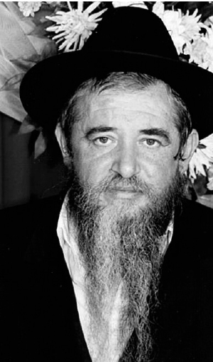

Anything and Everything for the Rebbe
“ I have seen many activists devoted to their cause, but I never saw such a phenomenon like Reb Meir. He was an amazing amalgam: an exceptional Torah scholar, learned and G-d fearing , along with being a community activist with the full passion of his soul. One could readily see how it all flowed from one source – his deep soul hiskashrus to the Rebbe Melech HaMoshiach ” That is how R ’ Dovid Chanzin described R ’ Meir Freiman upon his untimely passing. * In honor of his yahrtzait on 12 Tishrei 5756 .

Rabbi Meir Freiman was born on 21 Teves 5705 in Yerushalayim. His parents were Aharon and Raizel Rochel and he was the youngest of their nine children. His father, who descended from Chassidim of the Tzemach Tzedek, raised his children in the Litvishe spirit.
When the grandfather, R’ Avrohom Yitzchok, went to settle in Eretz Yisroel as a young man, he was concerned about his children’s chinuch. As a Chassid, he decided to have yechidus with the Tzemach Tzedek and tell him what was on his mind. The Tzemach Tzedek told him not to worry, “Your descendants will be Chabad Chassidim.” Indeed, the bracha was fulfilled when his grandson, Meir, returned to the family’s roots, to Chabad.
Meir was an above-average child in his intelligence and alacrity to carry things out for his parents and family members. As a child he began to display an impressive ability to get things done.
His Torah knowledge was exceptional. His friends would sometimes test him. They would put a finger on the page and ask what it said, and he would answer instantly.
It was 5715, when a few bachurim, students in Yeshivas Toras Emes Chabad in Yerushalayim, led by R’ Naftali Roth, decided to raise the level of Hasmada (diligence in Torah learning) in the Yerushalmi yeshivos, particularly among the boys learning in the elementary schools. After various ideas were raised and rejected, it was decided to start a network of Yeshivos Erev. These were after-school learning programs where boys could continue learning. These programs were suffused with the spirit of Chabad Chassidus.
Among the hundreds of children who attended these Yeshivos Erev was Meir’ke Freiman who was only ten years old. After learning in Eitz Chaim he would attend the Yeshivas Erev program in the Shaarei Chesed neighborhood. It was there that he savored his first drop of Chabad Chassidus.
The Chabad atmosphere he learned in slowly began to have an effect on him. For his twelfth birthday, he wrote a letter to the Rebbe for the first time and asked for a bracha. He received a reply.
When boys from the Yeshivas Erev received a response from the Rebbe, it was cause for celebration. They would bring cookies and nosh and make it into a Yom Tov.
As time went on, Meir began writing to the Rebbe on his own, about various matters, usually personal. He once complained to R’ Roth about the speed of the davening at the Yeshivas Erev. Apparently, R’ Roth failed to rectify the problem and Meir wrote to the Rebbe. When R’ Roth had yechidus the Rebbe told him to pay attention to the complaints of his students, especially of this kind.
Meir’s diligence increased. His love for Torah was boundless. It was not surprising that he was the one to suggest that the boys in the Yeshivas Erev stay awake all Thursday night and learn.
When the Rebbe heard about Meir and his friends’ long nights of learning he wrote to R’ Roth about it, expressing his dissatisfaction that boys so young are staying up all night. From then on R’ Roth only allowed them to stay until two in the morning.
When R’ Roth was in yechidus the Rebbe referred to this and looking pleased, said: About the learning Thursday night, Freiman … learns … every Thursday night until two. That is a great deal and that is enough; he should not learn more, especially all night. Supervise him.
In order to increase the level of Hasmada, the people in charge of the Yeshivos Erev decided to arrange a public test for talmidim ages 10-16. Every talmid who was willing to be tested on a minimum of fifty daf Gemara could participate.
At the contest that took place a few weeks later, only Meir Freiman and one other boy, Elimelech Bernstein, agreed to be tested on 300 daf Gemara. Meir won the first prize, a big, beautiful Shas. R’ Shlomo Yosef Zevin, one of the judges, announced that since the winner also learned Chassidus, he should review a maamer. Meir stood there and reviewed a maamer quite nicely as the members of the Badatz and many other g’dolim sat there on the dais.
In a yechidus that R’ Roth had, the Rebbe referred to Meir’s brilliance and his winning the contest, saying: Freiman won the prize in the contest and he is a good boy and gifted with a good head, a masmid who learns every day with Hasmada until late …
A TAMIM
Even as a 12 year old, Meir wanted to switch to Toras Emes. However, having resolved not to make a move without the Rebbe’s approval, he did not dare do anything on his own. He wrote to the Rebbe and explained that he wanted to learn Torah in a Chabad atmosphere, and to be able to regularly learn Chassidus the way it is learned in Lubavitch yeshivos.
Many weeks went by until an answer arrived. The Rebbe briefly wrote that since it was the middle of the school year, it was not the right time to switch yeshivos.
When it was time to register for yeshiva, he wrote to the Rebbe once again. This time, R’ Roth wrote on Meir’s behalf. Again, some time passed until the answer arrived: Consult with askanei Anash in Yerushalayim and check whether the home of the parents of the boy and the environmental factors are suited for this.
This answer was probably given because of the father’s opposition to the idea. He and his family were Misnagdim and he did not want his son to learn in a Chabad yeshiva.
R’ Roth recalled, “A few times one of his brothers came to me and I could see he had been crying. ‘We greatly admire the learning program you initiated, but that he should make such a change?!’
“After receiving the Rebbe’s answer, his switching yeshivos was delayed, but his desire to go there was so strong that he eventually switched to Toras Emes.”
The learning in Toras Emes and the farbrengens he attended provoked an inner upheaval in the young diligent student, who reacted to everything in a p’nimius’dike way. Naturally, he began to yearn to go to the Rebbe.
In those days, a trip to the Rebbe entailed endless difficulties, even for someone who had the money; all the more so for Meir who regularly suffered from poverty. The trip itself wasn’t easy. It was a long, tiring sea voyage with an extended delay in France, etc. Nevertheless, he longed to see the Rebbe. He worked and saved money and he went to the Rebbe for the first time for Rosh HaShana 5725.
He was in Crown Heights for three months and then a letter arrived at the Rebbe’s office from his brothers. They described how hard it was for their parents to manage without him. His father was not at home because he was helping his sick mother, and Meir’s mother was alone, finding it hard to handle all the burdens that had fallen upon her after he left. Not only that but she had hurt herself and it was difficult for her to do things and she was used to Meir doing everything. The brothers, who did not have Meir’s address, mailed it to the Rebbe’s office. In response to Meir’s question, the Rebbe told him to return to Eretz Yisroel.
RUNNING THE SHOW IN KFAR CHABAD
In 5726 he married Zlata Pariz, the daughter of R’ Boruch and the granddaughter of R’ Avrohom, both of them Chassidim who were utterly devoted to the Rebbe.
The young couple lived in Lud and R’ Meir learned in a kollel that was started by R’ Efraim Wolf. A short while later, R’ Meir began to teach in Tomchei T’mimim in Lud. He taught for a few months and then switched to teach in the vocational school in Kfar Chabad. It seems that he realized that these were temporary jobs until he found his place.
It was at this time that the director of the vaad of Kfar Chabad, R’ Shlomo Maidanchek, “discovered” him. He saw Meir’s talents and took him from teaching and made him the secretary of the vaad of Kfar Chabad and his right hand in developing Kfar Chabad. This was in the beginning of 5729.
This is the point when R’ Meir’s askanus began. It was work that entailed blood and sweat, ups and downs, good days and bad, until his final day.
He served in this role for ten years. He did not see it as a position of honor but as actual servitude. He met with various people in government offices, as well as various municipalities, and did what he could on behalf of the Kfar whether regarding transportation, installing a sewage system, laying electrical lines, paving roads, construction, development, adding classrooms as well as improving the education system and more. He would submit the requests, ask for permits, obtain money, work and run around from place to place. For example, he was involved in all aspects of building dozens of houses in Kfar Chabad. He was in contact with the Housing Ministry and had the construction of the houses on his shoulders. Additionally, he had to deal with the residents, each family and their wishes, and tried to provide the proper response to each request.
“In every municipality or local council,” recounted R’ Shlomo Maidanchek, “there is a department for each field and issue, with someone in charge who is assisted by an experienced staff. In our vaad though, R’ Meir is the only worker and he is in charge of all the departments. He has to contend with all the problems: farming, orchard cultivation, taxation, contacts with the Jewish Agency, making agreements with building contractors, examining building plans, construction, etc. In all these areas, R’ Meir served as the head of the department as well as the secretary and the clerk, and he did it with expertise in every field in all its details. It was amazing to see how he was able to master a complicated contract within a short time, one that contained dozens of clauses.”
TANK DRIVER
On Yom Kippur 5734, R’ Meir was drafted and sent to the southern front as a tank driver. On two occasions his life and the lives of others were saved in an open miracle. The first time was when, on the first day of Chol HaMoed, they received the Dalet minim and R’ Meir managed to convince a kibbutznik tank commander to come out with his crew and say the bracha. Just when the last of the soldiers left the tank it took a direct hit. The second time was on a Shabbos, as they lay in a trench and R’ Meir decided it was time to make Kiddush. When they went out to make Kiddush a shell fell and exploded in the trench they had just exited.
His wife Zlata was in Crown Heights at the time. She was planning on leaving the day after Yom Kippur, and she stood near Gan Eden HaTachton right after the fast with her father. The Rebbe blessed them with a good trip. When her father said that her husband was in a combat unit, the Rebbe blessed her that she would relay good news from everyone and added a few times, “collect calls on my account.”
RABBI OF THE SCHOOL
In 5736, R’ Meir was asked by R’ Mendel Futerfas to be the principal and school rabbi of Beis Rivka Seminary. Beis Rivka in Kfar Chabad Beis was familiar to him as he had taught chassidus there in the past. R’ Meir did not do anything without consulting with the Rebbe and the answer he got was to accept the position.
At first, he served as the principal but not long afterward, he dropped this difficult position and was the rav and mashpia of the school. As in every area to which he devoted himself in life, here too, R’ Meir put his heart and soul into chinuch. He was completely devoted to the students. There was no separation between his private life and his work in chinuch. He included his family in his chinuch work. Every Shabbos he invited girls to his house so they would experience the fiery Chassidic atmosphere of Shabbos. Many of the girls experienced adolescent angst within the religious-Chassidic world they lived in. At his Shabbos table he reviewed sichos on the parsha and concepts that had to do with issues the girls were grappling with.
BEIS NACHUM YITZCHOK
Along with his work at Beis Rivka, R’ Meir did not stop his communal efforts on behalf of Kfar Chabad. Although he had left his work as secretary of the vaad of Kfar Chabad, the task of strengthening the Kfar, as the Rebbe wanted, was a top priority for him.
At this time, R’ Zalman Butman began building the Beis Nachum Yitzchok shul, and he asked R’ Meir for his help. R’ Meir gave his all to the construction of the shul. He got everyone in the Kfar involved, obtained money from the vaad, and gave the contractor, who refused to continue working without compensation, all the money his wife received from the Education Ministry in severance pay.
Even after the shul was completed, he took care of obtaining tables and benches. He even took care of Shabbos tablecloths and every Erev Shabbos he or his daughters would go and spread the tablecloths out on the tables.
He ensured the holiness of the place and started many daily shiurim on various topics and levels, in the morning and the evening. He served as a role model and began giving a shiur in Rambam and Shulchan Aruch HaRav. Every day he taught Shulchan Aruch, Orach Chaim. He began with the laws of getting up in the morning in siman Alef and went all the way through, adding sections from Yore Deia and then started again at the beginning. He also gave a daily shiur in Gemara for many years. They learned in order until he finished the entire Shas along with his regular attendees.
He also gave shiurim on Shabbos in the laws of Shabbos. Before every Yom Tov, thirty days before, he would teach the laws of the holiday. He did all this without bombast and without a smidgen of pride or any ulterior motives.
In 5741, he was appointed by the Beis Din Rabbanei Chabad to be in charge of the campaign of a letter in a Torah scroll. He was the spirit behind the outstanding success of the campaign when, in less than a year, all the letters were sold – over 300,000.
BETTER TO BE A MEKUSHAR
In 5744 R’ Meir had a stroke. His chances of recovery were close to zero but with the Rebbe’s bracha he recovered. His doctors affirmed that this was miraculous. He even went back to work.
For half a year he was paralyzed in half his body and he spent most of his time at home, recovering and doing intensive physical therapy. His recovery was difficult and slow. He had to work hard to regain proper speech. He had to record himself every day for half an hour to determine whether there was any improvement, so he recorded himself learning the daily three chapters of Rambam.
At a certain point, when his recovery was slower than expected, one of his friends suggested that he obtain water as a segula from a certain tzaddik who was known as a miracle worker. R’ Meir rejected the idea and said: I don’t care about recovering a bit slower, but it should be from the Rebbe.
DIRECTOR OF THE RESHET
In the middle of the 80’s, the Reshet reached a dead end, financially. Chabad rabbanim in Eretz Yisroel put their heads together in an attempt to find a new director who would straighten things out and get the Reshet back on its feet and even expand it.
R’ Meir Freiman was called upon and he was instated as the director of Reshet Oholei Yosef Yitzchok. He did not have the luxury of a grace period to acclimate to the job, and he swiftly saw the myriad of problems the Reshet was experiencing: registration of students, separation between boys and girls, enforcing required standards, increasing limudei kodesh, transportation, teaching and administrative staff, and above all else – money. The debts he inherited were enormous, all bearing interest while the resources were drying up. Schools screamed for help. The magnificent organization was about to collapse.
Although the burden was unbearably heavy, R’ Meir tried to deal with it. He contacted people in the Education Ministry and other government figures, and managed to generate funding. In the early years he was able to roll over the debts that burdened the Reshet. Additionally, he also expanded the Reshet and started new schools.
Like anything that R’ Meir took on, he ran the Reshet with all his heart. He started his day early in the morning by learning Chassidus, t’villa, and t’filla. By eight in the morning he was in his car. Either he was on his way to the Reshet office or, often he would go to visit schools and see for himself how they were run and to ensure that all was as it should be. He often went to Yerushalayim to the Education Ministry or would visit various governmental educational departments to speed up permits and to obtain funding for schools in those cities.
In those days, there were no cell phones. There was no official car for him to use; he used his own car to personally check on what was going on in the Reshet. There were days that he would be in a school in Netivot in the south in the morning and in a school in Yavniel in the north in the afternoon. In each place he would oversee the staff, give advice, make decisions, offer help, and take care of the running of a network of schools with thousands of students.
R’ Meir not only saved the Reshet from collapsing, considering the state it was in when he took over, he even opened two new schools, in Yavniel and Givat Ada. This demonstrated his tremendous devotion to developing the Reshet and to providing nachas to the Rebbe, its founder.
LEARNING NONSTOP
Even while extremely busy with his askanus, he used every spare minute to take a Gemara, Shulchan Aruch or something else, and learn. Even upon returning from a long, difficult day in the south or the north of the country, after driving himself in his old, not air conditioned car, exhausted, his family knew that he would not listen to their appeals that he rest. He would not forgo the shiur, no matter what! He would get ready to go out to the shiur that he gave every day in the shul in Gemara and Shulchan Aruch. At that time, all signs of his tiredness disappeared.
Despite his time constraints, his consistent learning enabled him to make significant achievements. He had an ongoing chavrusa with R’ Leib Raskin and R’ Gurewitz in Gemara, and together they finished Shas at least twice.
When the Rebbe announced the daily learning of Rambam, R’ Meir stopped the study of Shas and spent that time on learning the daily Rambam. He learned it in-depth and with great chayus. “He had two sets of Rambam,” said his son, Sholom Ber, “a regular set and a Rambam L’Am with its clear explanation on the bottom. He learned with both editions in order to ensure that he understood everything properly.”
When R’ Meir served as the director of the Reshet, it became necessary to obtain some special funding and this could be accomplished only through the Education Minister at the time, Shulamit Aloni. After much effort, he managed to wangle an appointment with her for three months in the future.
He went to the minister’s office in Yerushalayim and waited for his appointment. The wait went beyond what he had planned. When he was finally allowed in to see her, it was late. He spoke briefly and after five minutes he apologized for having to leave.
The minister, never having experienced anything like this, expressed her surprise and asked where he was rushing to. R’ Meir said he had a shiur in Halacha between Mincha and Maariv in the neighborhood shul and he could not miss it. “If I leave now and drive quickly, I can manage to make it in time.”
The minister was even more taken aback and she asked, “But you waited for this meeting for three months; it’s a pity to lose out.” R’ Meir smiled apologetically and shrugged. “If that’s the case,” she said, “you are for real. We will finish the meeting in five minutes,” and then and there, she signed to all his requests.
His son, R’ Sholom Ber, said that he once found a check in one of his father’s s’farim. It was made out for 1500 shekels and on the other side were written chiddushei Torah. “You could say that it represented what my father was about; he was both a man of Torah as well as an askan.”
R’ Meir passed away on 12 Tishrei 5756. He left chassidishe descendants, many of who are on shlichus.
D. Levanon. "Anything and Everything for the Rebbe." Beis Moshiach, no. 895 (September 17, 2013).